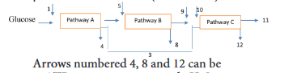
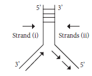
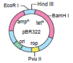
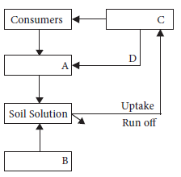
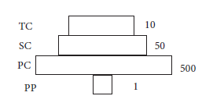

one. Consider the following statements and choose the right option.
one) Cereals are members of grass family.
ii) Most of the food grains come from monocotyledon.
a) (one) is correct and (ii) is wrong
b) Both (one) and (ii) are correct
c) (one) is wrong and (ii) is correct
d) Both (one) and (ii) are wrong
2. Assertion: Vegetables are important part of healthy eating.
Reason: Vegetables are succulent structures of plants with pleasant aroma and flavours.
a) Assertion is correct, Reason is wrong
b) Assertion is wrong, Reason is correct
c) Both are correct and reason is the correct explanation for assertion.
d) Both are correct and reason is not the correct explanation for assertion.
3. Groundnut is native of dash
a) Philippines
b) India
c) North America
d) Brazil
4. Statement A: Coffee contains caffeine Statement B: Drinking coffee enhances cancer
a) A is correct, B is wrong
b) A and B – Both are correct
c) A is wrong, B is correct
d) A and B – Both are wrong
5. This is an example of brush fibre yielding plant
a) Cyperus
b) Neem
c) Cotton
d) Palm
6. Tectona grandis is coming under family
a) Lamiaceae
b) Fabaceae
c) Dipterocaipaceae
e) Ebenaceae
7. Tamarindus indica is indigenous to
a) Tropical African region
b) South India, Sri Lanka
c) South America, Greece
d) India alone
8. New world species of cotton
a) Gossipium arboretum
b) Gossypium herbaceum
c) Both a and b
d) Gossipium barbadense
9. Assertion: Turmeric fights various kinds of cancer
Reason: Curcumin is an anti-oxidant present in turmeric
a) Assertion is correct, Reason is wrong
b) Assertion is wrong, Reason is correct
c) Both are correct
d) Both are wrong
10. Find out the correctly matched pair.
a) |
Rubber |
Shorea robusta |
b) |
Dye |
Indigofera annecta |
c) |
Timber |
Cyperus papyrus |
d) |
Pulp |
Hevea brasiliensis |
11. Find out the wrongly paired one
a) |
Burma teak |
Tectona grandis |
b) |
Rosewood |
Dalbergia sp |
c) |
Ebony |
Diaspyros eberum |
d) |
Henna |
Shorea robusta |
12. Observe the following statements and pick out the right option from the following:
Statement one – Perfumes are manufactured from essential oils.
Statement II – Essential oils are formed at different parts of the plants.
a) Statement one is correct
b) Statement II is correct
c) Both statements are correct
d) Both statements are wrong
13. Observe the following statements and pick out the right option from the following:
Statement one: The drug sources of Siddha include plants, animal parts, ores and minerals.
Statement II: Minerals are used for preparing drugs with long shelf-life.
a) Statement one is correct
b) Statement II is correct
c) Both statements are correct
d) Both statements are wrong
14. Select the mismatch.
a) Andrographis – hepato protective
b) Adhatada – broncho dialator
c) Phyllanthus – anti-diabetic
d) Curcumin – anti-oxidant
15. The active principle trans-tetra hydro canabial is present in
a) Opium
b) Curcuma
c) Marijuana
d) Andrographis
16. Which one of the following matches is correct?
a) Palmyra - Native of Brazil
b) Saccharum - Abundant in Kanyakumari
c) Steveocide - Natural sweetener
d) Palmyra sap - Fermented to give ethanol
17.The only cereal that has originated and domesticated from the new world.
a) Oryza sativa
b) Triticum asetumn
c) Triticum duram
d) Zea mays
18.Which of the following statement(s) is/are correct?
one. Mushrooms are the fruiting body of edible fungi.
ii. Single-cell proteins are the dried cells of macro-organism.
iii. Regular use of liquid seaweed fertilizer will help plants to withstand environmental stress.
iv. SCP can completely replace the conventional protein sources.
A.(one) and (ii),
B. (one) and (iii),
C. (one) and (iv),
D. (one) alone
19. Select the incorrect pair / pairs of statements about single cell protein
one. Chemical pesticides - Safe for human and the environment
ii. Mushrooms - White vegetable
iii. Zarrouk medium- Culture medium
iv. Seaweed - Rich in potassium
A. (one) and (ii),
B. (one) and (iv),
C. (one) and (iii),
D. (one) alone
20.Match the following pairs about mushroom cultivation.
A. Straw size (i) 75-85%
B. Distant between blocks (ii) 20 cm
C. Cap size at harvesting (iii) 2-4 inch
D. Relative humidity (iv) 10-12 cm
A. A-(ii), B-(iii), C-(iv), D-(one)
B. A-(iii), B-(ii), C-(iv), D-(one)
C. A-(ii), B-(iii), C-(iv), D-(one)
D. A-(one), B-(ii), C-(iii), D-(iv)
21. Assertion: In Spirulina culture, half of the required nutrients added first and the rest in later. Reason: If all the nutrients are added first, it will affect the culture growth.
(a) Both A and R are true and R is the correct explanation of A.
(b) Both A and R are true but R is not the correct explanation of A.
(c) A is true but R is false.
(d) Both A and R are false.
22. Write the cosmetic uses of Aloe.
23. What is pseudo cereal? Give an example.
24. What are cucurbits? Why it is considered as an important summer vegetable?
25. Which fruit is rich in potassium? Mention its economic importance.
26. Discuss which wood is better for making furniture.
27. A person got irritation while applying chemical dye. What would be your suggestion for alternative?
28. Name the humors that are responsible for the health of human beings.
29. Give definitions for organic farming?
30. Define bonsai?
31. What is terrarium?
32. Which is called as the “King of Bitters”? Mention their medicinal importance.
33. Differentiate bio-medicines and botanical medicines.
34. Write the origin and area of cultivation of green gram and red gram.
35. What are millets? What are its types? Give example for each type.
36. Write the economic importance of Lycopersicon esculentum.
37. If a person drinks a cup of coffee daily it will help him for his health. Is this correct? If it is correct, list out the benefits.
38. Enumerate the uses of turmeric.
39. What is TSM? How does it classify and what does it focuses on?
40. What are the advantages of cultivation of aromatic plants?
41. How will you make a Bonsai tree
42. What is NMPB?
43. Write the uses of nuts you have studied.
44. Give an account on the role of Jasminum and Rosa in perfuming.
45. Give an account of active principle and medicinal values of any two plants you have studied.
46. Write the economic importance of rice.
47. Which TSM is widely practiced and culturally accepted in Tamil Nadu? - explain.
48. What are psychoactive drugs? Add a note Marijuana and Opium
49. Describe the types of fibres.
50. What are the King and Queen of spices? Explain about them and their uses.
51. How will you prepare an organic pesticide for your home garden with the vegetables available from your kitchen?
52. What will you do if you want to make a portable indoor greenery?
53. Give an account on cultivation of Gloriosa superba / Cymbopogon citrates
Term: Description
Lubricant: Oily substance reduces friction.
Odour: Smell (pleasant or unpleasant).
Diuretic: Substance that promote urine production
Cirrhosis: A chronic liver disease typically caused by alcoholism or hepatitis.
Antioxidant: A substance that scavenges free radicals.
Carminative: A drug causing expulsion of gas from the stomach or bowel.
Malnutrition: Deficiencies, excesses or imbalances in a person’s intake of energy and / or nutrients
Spawn: Mycelium especially prepared for propagating mushrooms
Aromatic crops: Plants that produce aromatic oils.
Perfumery: The art or process of making perfume
Cosmetics: substances or products used for personal grooming.
confectionary: a place where confections/ sweets are kept or made
Anti-inflammatory: the property of a substance or treatment that reduces swelling.
Alzheimer’s disease: A type of dementia that causes problems with memory, thinking and behavior Ethnobiology:
Ethnobiology is the study of relationships between peoples and plants.
Pharmacopoeia: Is a book containing directions for the identification of compound medicines, and published by the authority of a government or a medical or pharmaceutical society.
Fixative: A substance used to reduce the evaporation rate and improve stability when added to more volatile components.
Antiperspirant: Products whose primary function is to inhibit perspiration / sweat
Seasoning: The processing of food with spices and condiments to enhance the flavour.
ICT Corner
Steps
• Type the URL or scan the QR code to open the activity page then Introduction page will open.
• Select Package of Practices to know the various methods of agricultural crops breeding system.
• Click on Chat with expert helps the farmers to clarify their doubts.
• Click on Videos to know about the agricultural methods visually through videos.
URL: https://play.google.com/store/apps/details?id=com.criyagen
Steps
• Type the URL or scan the QR code to open the activity page then Introduction page will open.
• Click on Agriculture it will display the approaches to cultivate the planted paddy, cotton and sugarcane.
• Click on Horticulture it will display the approaches to cultivate the agricultural crops like tea, coffee.
• Click on Organic Farming it will explain the Traditional method of farming and Traditional Fertilizers.
• Click on Forestry it will explain the gardening methods about plants.
URL: https://play.google.com/store/apps/details?id=com.agribook.venkatmc.agri
References
UNIT VI – Reproduction in Plants
1. Gangulee,H.C., and Datta,C., 1972 College Botany,-Volume 1 New Central Book
Agency, Calcutta-9.
2. Bhojwani,S.S and Bhatnagar, S.P. 1997.
The Embryology of Angiosperms. VIKAS Publishing Housing Pvt Limited, New Delhi.
3. Rao,K.N and Krishnamurthy, K.V. 1976 Angiosperms ,Publisher S.Viswanathan,
Chennai.
4. Maheswari, P. 1950. An introduction to the embryology of angiosperms Tata Mcgraw Hill Publishing Co Ltd. New Delhi.
5. Pat Willmer, 2011. Pollination and Floral Ecology, Princeton University Press. USA
6. Embryology of Flowering Plants
Terminology and Concepts. 2009 Vol. 3: Reproductive Systems (Edited by T.B.Batygina) Science Publishers Enfield (NH) USA.
UNIT VII – Genetics
1. Anthony J.F. Griffiths, Susan R. Wessler, Richard C. Lewontin, Sean B. Carroll (2004) Introduction to Genetics Analysis 8th Edition, USA: W.H. Freeman & Co. Ltd.
2. Benjamin A. Pierce (2010), Genetics: A conceptual approach, 3rd Edition, New York
3. Carl P. Swanson, Timothy Merz, William J. Yound, Cytogenetics, (1965) Eastern Economy Edition.
4. Carl-Erik Tornqvist, William G Hopkins, (2006), Plant Genetics, New York: Chelsa House publications.
5. Clegg C J, (2014) Biology, London: Hooder Education
6. Daniel L, Hartl, David Freifelder, Leon A. Snyder, Jones (2009), Basic Genetics, Bartlett publishers, USA
7. James D.Watson, Tania A. Baker, Stephen P.Bell, Alexander Gann, Michael Levine, Richard Losick, (2013) Molecular Biology of the Gene –London: Pearson Education
8. Krishnan.V, N. Senthil, Kalaiselvi Senthil (2015), Principles of Genetics, 2nd Edition.
9. Leland H. Hartwell, Leroy Hood, (2011), Genetics, 4th Edition, New York: McGraw
Hill Companies.
10. Linda E Graham, James M. Graham, Lee W. Wilcox (2006), Plant Biology, 2nd
Edition, Pearson Education, Inc.
11. Monroe W. Strickberger, Genetics – London: Pearson Education, Inc.
12. Peter J. Russell (2003), Essential Genetics, Pearson Education, Benjamin Cummings, San Francisco.
13. Randhawa S.S (2010), A Text Book of Genetics, 3rd Edition, S.Vikas and company.
14. Rober J. Brooker (2015), Genetics, 4th Edition, London: McGraw Hill.
UNIT VIII - Biotechnology
1. Alan Seragg (2010). Environmental Biotechnology. Second Edition. Oxford University Press, Oxford, New York.
2. Bernard R. Glick; Jack J. Pasternak, Cheryl L. Patten (2010). Molecular Biotechnology: Principles and Applications of Recombinant DNA. ASM Press, USA.
3. Bernard, R., Glick and Jack, Pasternak, J. (2001). Molecular Biotechnology:
Principles of Applications Recombinant DNA Technology. ASM Press, Washington DC.
4. Bhojwani, S. S. and Razdan, M. K. (2004). Plant Tissue Culture: Theory and Practice. Elsevier Science.
5. Bhojwani, S. S. (1990). Plant Tissue Culture: Applications and Limitations. Elsevier, Amsterdam.
6. Bhojwani, S. S. and Razdan, M. K. (1996). Plant Tissue Culture Theory and Practice. A Revised Edition, Elsevier, Amsterdam.
7. Bimal, C., Bhattacharyya and Rintu Banerjee (2010). Environmental Biotechnology. Oxford University Press, Oxford, New York.
8. Brown, T. A. (2007). Gene Cloning and DNA Analysis - An Introduction. 6th ed.,
Wiley-Blackwell, UK.
9. Chen, Z. and Evans, D. A. (1990). General techniques of tissue cultures in perennial crops. In: Z. Chen et al. (ed.). Handbook of Plant Cell Culture. Vol. 6. Perennial Crop. McGraw-Hill Publishing Company, New York.
10. Dixon, R. A. and Gonzales, R. A. (2004). Plant Cell Culture. IRL Press.
11. Dixon, R. A. and Gonzales, R. A. (2004). Plant Cell Culure, IRL Press.
12. Dubey, R. C. (2009). A Textbook of Biotechnology. S. Chand & Co. Ltd.,
New Delhi.
13. Glick, B. R. and Pasternak, J. J. (2002). Molecular Biotechnology: Principles and Applications of Recombinant DNA. Panima Publishers Co., USA.
14. Gupta, P. K. (2010). Elements of Biotechnology. Rastogi & Co., Meerut.
15. Kalyankumar De (2007). An Introduction to Plant Tissue Culture Techniques, New Central Book Agency, Kolkata.
16. Kalyankumar, De (2007). An Introduction to Plant Tissue Culture Technique. New Central Book Agency, Kolkata.
17. Morgan, Thomas Hunt (1901). Regeneration. New York: Macmillan.
18. Ramawat, K. G. (2000). Plant Biotechnology. S. Chand & Co. Ltd., New Delhi.
19. Razdan, M. K. (2004). Introduction to Plant Tissue Culture. Second Edition. Oxford & IBH Publishing Co. Pvt. Ltd., New Delhi.
20. Smita Rastogi and Neelam Pathak (2010). Genetic Engineering. Oxford University Press, New Delhi.
UNIT IX Plant Ecology
1. Chapman J.L. and Reiss M.J., (1995), Ecology – Principles and Applications,
NewYork: Cambridge University Press,
2. Dash M.C., (2011), 3rd Edition, Fundamental of Ecology, Tata McGrawhill, New Delhi.
3. Eugene P. Odum, Ecology, 2nd Edition, New Delhi:Oxford & IBH Publishing Co. Pvt.
Ltd.,
4. Kochar P.L., (1995), Plant Ecology, Agra: Ratch Prakashon Mandir,
5. Madhab Chandra Dash, Sathya Prakash, (2011), Fundamentals of Ecology, New Delhi: Tata McGrawhill,.
6. Mannel C. Molles Jr., (2010), Ecology – Concepts and Applications, New Delhi: Tata McGrawhill,
7. Michael Cain, William D. Bowman, Sally D. Hacker, (2008), Ecology, V Publisher: Sinauer Associates, Inc
8. Misra K.C., (1998), Manual of Plant Ecology, Oxford & IBH Publishing Co. Pvt.
Ltd., New Delhi.
9. Mohan P. Arora, (2016), Ecology, Mumbai: Himalaya Publishers
10. Peter J. Russel, Stephan L. Wolla, Paul E. Hertz, Cacie Starr, Haventy McMillan, (2008), Ecology, New Delhi: Cengage Learing India Pvt. Ltd.,
11. Peter Stiling, (2012), Ecology Global Insighto and Investigations, New Delhi:.Tata McGrawhill,
12. Sharma P.D., (2018), 13th Edition, Ecology and Environment, Meerut: Rastogi
Publication.
13. Shukla and Handel.C, (2016), Plant Ecology, S. Chand & Company Ltd., New
Delhi.
14. Singh. H.R., (2009), Environmental Biology, New Delhi: S. Chand and Company Limited.
15. Sir Harry G. Champion, Seth S.K., (2005), The forest types of India, Natraj Publication, Dehradun.
16. Thomas M. Smith, Robert Leo Smith, (2015), Elements of Ecology, England:
Pearson Education Ltd.,
17. Verma. V, (2011), Plant Ecology, New Delhi: Anu Books Pvt. Ltd.,
UNIT X – Economic Botany
1. Gopalan C, Rama Sastri B.V, and Balasubramanian S.C., (1989) Nutritive value of Indian Foods – Revised and updated by Narasinga RaoB.S., Deosthale Y.G., and Pant K.C., Hyderabad; National Institute of Nutrition, ICMR.
2. Kochhar, S.L. (2016) Economic Botany in the Tropics, (Fifth Edition), Delhi:Cambridge University Press
3. Simpson, B.B., Ogozaly, M.C., (2001) Economic Botany (3rd Edition) Newyork:
McGraw- Hill.
4. Marriyaom H. Reshid, (2017), The Flavour of Spices – Journeys, Recipes and Stores, Hochette India.
5. Gerrald E. Wickens, (2001) Economic Botany Principles and Practices, Netherlands: Springer.
6. Rajkumar Joshi, (2013) Aromatic and Vital Oil Plants. New Delhi:Agrotech Press,
7. Singh P. Ornamental, (2008), Medicinal, Aromatic and Tuber Crops, New Delhi:
Agrotech Press, Jaipur,
8. Mukund Joshi, (2015), Text Book of Field Crops, Delhi: PHI Learning Private Limited.
9. Rajesh Kumar Dubey, (2016) Green Growth, Eco-Livelihood & Sustainability New Delhi: Ocean Books Private Limited
English - Tamil Terminology
Unit VI - Reproduction in plants
Apomixis-கருவுறா இனப்பெருக்கம்
Apospory-கருவுறா வித்து
Archesporium-முன்வித்து திசு
Cleistogamous flower-மூடிய பூ
Cryopreservation-குளிர்பாதுகாப்பு
Embryo sac-கருப்பை
Floral primordium-மலர் தோற்றுவி
Funiculus-சூல் காம்பு
Microsporogenesis-நுண் வித்துருவாக்கம்
Polyembryony-பல்கருநிலை
Scion-ஒட்டுத் தண்டு
Stock-வேர்கட்டை
Unit VII - Genetics
Allele-அல்லீல்
Allopolyploidy-அயல்பன்மடியம்
Alternative splicing-மாற்று இயைத்தல்
Anticodons-எதிர் குறியன்கள்
Autopolyploidy-தன்பன்மடியம்
Backcross-பிற்கலப்பு
Blending inheritance-கலப்பு பாரம்பரியம்
Branch migration-கிளைவழி இடம்பெயர்தல்
Capping-நுனி மூடுதல்
Coding strand-குறியீட்டு இழை
Codominance-இணைஓங்குத்தன்மை
Complete linkage-முழுமையான பிணைப்பு
Complementation test-நிரப்பு சோதனை
Coupling-இணைப்பு
Crossing over-குறுக்கேற்றம்
DNA metabolism-DNA வளர்சிதை மாற்றம்
Dominance-ஓங்குத்தன்மை
Duplication-இரட்டிப்பாதல்
F, generation (first filial generation)-முதல் மகவுச்சந்ததி
Frame shift mutation-கட்ட நகர்வு சடுதி மாற்றம்
Gene interaction-மரபணு இடைச்செயல்
Gene mapping-மரபணு வரைபடம்
Genome-மரபணுத்தொகையம்
Genotype-மரபணுவகையம்
Haploidy- ஒருமடியம் (பன்மம்)
Heredity-பாரம்பரியம்
Heterozygous-மாறுபட்டபண்பிணைவு
Homologous chromosome-ஒத்த அமைவிட குரோமோசோம்
Incomplete dominance-முழுமைபெறா ஓங்குத்தன்மை
Incomplete linkage-முழுமையற்ற பிணைப்பு
Independent assortment-சாராஒதுங்கு விதி
Internal methylation-அக மெத்திலாக்கம்
Inversion-தலைகீழ் திருப்பம்
Jumping genes-தாவும் மரபணுக்கள்
Linkage group-பிணைப்புத் தொகுதி
Locus-நிலையிடம்
Map unit-வரைபட அலகு
Mis-sense mutation-தவறாக
வெளிப்பாட்டடையும் சடுதிமாற்றம்
Monohybrid-ஒரு பண்புக்கலப்புயிரி
Multiple alleles-பல்கூட்டு அல்லீல்கள்
Mutagen-சடுதிமாற்றக் காரணி
Mutation-சடுதிமாற்றம்
Non-sense mutation-வெளிப்பாடடையாத சடுதி மாற்றம்
Palindrome-முன்பின்ஒத்தவரிசை
Phenotype-புறத்தோற்றவகையம்
Purity of gametes-இனச்செல்கலப்பற்றது
Recessive-ஒடுங்குத்தன்மை
Repulsion- விலகல்
Restriction enzymes-தடைக்கட்டு நொதிகள்
RNA Splicing-RNA இயைத்தல்
Saltation-திடீர் மாற்றம்
Segregation-தனித்தொதுங்குதல்
Sequence-தொடர்வரிசை
Sex linkage-பால் பிணைப்பு
Silent mutation-அமைதி சடுதிமாற்றம்
Split genes-பிளவுறு மரபணு
Start codon-தொடக்கக் குறியன்
Synaptonemal complex-இணைப்பிணைப்புக் கூட்டமைப்பு
Synopsis-இணைச் சேர்தல்
Tailing-வாலாக்கம்
Tassel seed-கதிர் குஞ்சவிதை
Template strand-வார்ப்பு இழை
Test cross-சோதனைக்கலப்பு
Tetrad stage-நான்மய நிலை
Three point test cross-முப்புள்ளி சோதனைக் கலப்பு
Translocation-இடம்பெயர்தல்
UNIT VIII - Biotechnology
Artificial seeds-செயற்கை விதைகள்
Aseptic condition-நுண்ணுயிர் அற்ற நிலை
Autoradiography-கதிரியக்க படமெடுப்பு
Biochip-உயிரி சில்லு
Biomass-உயிரி கூளம்
Biopharming-உயிரி மருந்தாக்கம்
Biopiracy-உயிரிபொருள் கொள்ளை
Bioreactor /Fermentor-உயிரி வினைகலன்/நொதிகலன்
Biosynthesis-உயிரி உற்பத்தி
Buffer-தாங்கல் கரைசல்
Carriers-கடத்தி
Cloned Plants-நகலொத்த தாவரங்கள்
Cloning-நகல்பெருக்கம்
Cloning Site-நகலாக்க களம்
Cryoconservation-உறைகுளிர் வெப்பநிலை பேணல்
Cybrids-கலப்பின பிளாஸ்மிட்கள்
Dedifferentiation-வேறுபாடு இழத்தல்
Differentiation-வேற்பாடுறுதல்
DNA Bank-DNA வங்கி
Downstream Process-கீழ்காற் பதப்படுத்தம்
Embryogenesis-கரு உருவாக்கம்
Embryoids -சிறுகருக்கள்
Explant-பிரிகூறு
Fermentation-நொதித்தல்
Gel Electrophoresis -இழும மின்னாற் பிரித்தல்
Gene-மரபணு
Gene Bank-மரபணு வங்கி
Gene Gun-மரபணு துப்பாக்கி
Gene Manipulation -மரபணு கையாளும் தொழில்நுட்பம்
Genetically modified plants-மரபணு மாற்றப்பட்ட தாவரங்கள்
Genome-மரபணு தொகையம்
Green Fuorescence Protein-பசுமை ஒளிர் புரதம்
Hardening-வன்மையாக்குதல்
Human Genome Sequence-மனித மரபணு தொகைய தொடர் வரிசை
Inoculation-உள்நுழைத்தல்
Insert-செருகி
invitro culture-ஆய்வுகூட சோதனை வளர்ப்பு
Isolation-தனிமைபடுத்துதல்
Laminar air flow chamber-சீரடுக்கு காற்று பாய்வு அறை
Liquid metlium/ liquid culture-திரவ ஊடகம் / திரவ வளர்ப்பு
Marker-அடையாளக்குறி
Microinjection-நுண்செலுத்துதல்
Micropropagation-நுண்பெருக்கம்
Mycoremediation-பூஞ்சை சீரமைப்பாக்கம்
Nutritional medium-ஊட்ட ஊடகம்
Organogenesis -உறுப்புகளாக்கம்.
Palindrome Sequence-முன்பின் ஒத்த வரிசை
Phytoremediation-தாவா சீரமைபாக்கம்
Pollen Bank-மகரந்த வங்கி
Probe-துருவி
Recombinant DNA-மறுகூட்டிணைவு DNA
Recombinant-மறுகூட்டிணைவு
Redifferentiation-மறுவேறுபாடுறுதல்
Regeneration-மீள் உருவாக்கம்
Replica Blotting Technique-நகல் முலாம்
தொழில்நுட்பம்
Restriction Enzyme -தடை கட்டு நொதி
Somatic Embryoids-உடல் கருவுருக்கள்
Sterile condition-நுண்ணுயிர் நீக்கிய நிலை
Sterilization-நுண்ணுயிர் நீக்கம்
Tissue culture-திசு வளர்ப்பு
Totipotency-முழு ஆக்குத்திறன் பெற்றவை
Transfection-தொற்றுதல்
Transposon-இடமாற்றிக் கூறுகள்
Upstream Process-மேல்காற் பதப்படுத்தம்
Vector-தாங்கி கடத்தி
Virus free plants-வைரஸ் அற்றத் தாவரங்கள்
Walking Genes-நடக்கும் மரபணுக்கள்
UNIT IX - Plant Ecology
Agroforestry-வேளாண்காடுகள்
Alien Invasive species-அயல் ஊடுருவும் சிற்றினங்கள்
Allelopathic chemicals-வேதியத்தடைப்
பொருட்கள்
Altitude-குத்துயரம்
Autecology-சுய சூழ்நிலையில்
Benthic-ஆழ்மிகு மண்டலம்
Benthos-ஆழ் உயிரிகள்
Biochar-உயிரித்தொகுப்பு
Biome-உயிர்மம்
Biotope-உயிரி நில அமைவு
Carbon foot print-கார்பன் தடம்
Carbon sequestration-கார்பன் ஒதுக்கமடைத்தல்
Carbon sink-கார்பன் தேக்கி
Co-evolution-கூட்டுப் பரிணாமம்
Decomposers-சிதைப்பவைகள்
Ecological hierarchy-சூழ்நிலைப்படிகள்
Ecotone-இடைச்சூழலமைப்பு
Ecotope-சூழல் நில அமைவு
Furgivores-பழ உண்ணிகள்
Gnano-கடல் அருகு வாழ் பறவைகளின் எச்சம்
Habitat-புவி வாழிடம்
Humus-மட்கு
Latitude-விரிவகலம்
Mimicry-பாவனை செயல்கள்
Niche-செயல் வாழிடம்
Ozone depletion-ஓசோன் குறைதல்
Photosyntheicaly active radioactive-ஒளிச்சேர்க்கை சார் செயலூக்கக் கதிர்வீச்சு
Plant Ecology-தாவர சூழ்நிலையியல்
Predation-கொன்றுண்ணும் வாழ்க்கை முறை
Sacred groves-கோயில் காடுகள்
Seedball-விதைப்பந்து
Social forestry-சமூகக்காடுகள்
Soil profile-மண்ணின் நெடுக்குவெட்டு விவரம்
Standing crops-நிலைப்பயிர்
Standing quality-நிலைத்தரம்
Succession-வழிமுறை வளர்ச்சி
Synecology- கூட்டுச் சூழ்நிலையில்
Topographic factors-நிலப்பரப்பு
வடிவமைப்பு காரணிகள்
Trophic level-அட்டஞ்சார் மட்டம்
UNIT X- Economic Botany
Acclimatization-புதிய தட்பவெப்ப நிலைக்கு பழகுதல்
Archeological records-தொல்லியல் பதிவுகள்
Aromatic plant- நறுமண தாவரம்
Bio medicine- உயிரிமூலக்கூறு மருந்து
Biofertilizers-உயிரி உரம்
Culinary- சமையல்
Decoction -வடிநீர்
Domestification-வளர்ப்புச் சூழலுக்கு உட்படுத்துதல்
Emasculation-மகரந்தத்தாள் நீக்கம்
Entrepreneur- தொழில் முனைவோர்
Essential oil- நறுமண எண்ணெய்
Fruiting body -கனி உடலம்
Gluten-பசையம்
Green manuring- தழை உரம்
Kelp- பழுப்பு பாசி
Organic agriculture-இயற்கை வேளாண்மை
Pelleting -சிற்றுருண்டைகள் ஆக்குதல்
Plant pathology -தாவர நோயியல்
Pseudo cereal - பொய் தானியம்
Pungent- நெடி (அல்லது) காரம்
Resin -பிசின்
Sapwood- மென்கட்டை
Saturated fatty acids-நிறைவுற்ற கொழுப்பு அமிலம்
Seed treatment / seed dressing- விதை நேர்த்தி
Spawn-பூஞ்சை வித்து
Stimulant-தூண்டி
Tillering- புல் கிளைத்தல்
Unsaturated fatty acids-நிறைவுறா கொழுப்பு அமிலம்
Vigour- வீரியம்
Volatile oil- எளிதில் ஆவியாகும் எண்ணெய்
Competitive Examination Questions
UNIT I – Diversity of Living World
1. Which of the following are found in extreme saline conditions? (NEET-2017)
a. Archaebacteria
b. Eubacteria c
c. Cyanobacteria
d. Mycobacteria
2. Select the mismatch (NEET – 2017)
a. |
Frankia |
Alnus |
b. |
Rhodospirillum |
Mycorrhiza |
c. |
Anabaena |
Nitrogen fixer |
d. |
Rhizobium |
Alfalfa |
3. Which among the following are the smallest living cells, known without a definite cell wall, pathogenic to plants as well as animals and can survive without oxygen? (NEET – 2017)
a. Bacillus
b. Pseudomonas
c. Mycoplasma
d. Nostoc
4. Read the following statements ( A to E ) and select the option with all correct statements (AIPMT – 2015)
A. Mosses and Lichens are the first organisms to colonise a bare rock.
B. Selaginella is a homosporous pteridophyte.
C. Coralloid roots in Cycas have VAM.
D. Main plant body in bryophytes is gametophytic, whereas in pteridophytes it is sporophytic.
E. In gymnosperms, male and female gametophytes are present within sporangia located on sporophyte.
a. B, C and E
b. A, C and D
c. B, C and D
d. A, D and E
5. An example of colonial alga is (NEET – 2017)
a. Chlorella
b. Volvox
c. Ulothrix
d. Spirogyra
6. Five kingdom system of classification suggested by R.H. Whittaker is not based on (AIPMT – 2014)
a. Presence or absence of a well defined nucleus
b. Mode of reproduction
c. Mode of nutrition
d. Complexity of body organisation
7. Mycorrhizae are the example of (NEET – 2017) `
a. Fungitasis
b. Antibiosis
c. Amensalism
d. Mutualism
8. Which of the following shows coiled RNA strand and capsomeres? (AIPMT – 2014)
a. Polio virus
b. Tobacco mosaic virus
c. Measles virus
d. Retrovirus
9. Viroids differ from viruses in having : (NEET – 2017)
a. DNA molecules with protein coat
b. DNA molecules without protein coat
c. RNA molecules with protein coat
d. RNA molecules without protein coat
10. Select the mismatch (NEET – 2017)
a. Pinus — Dioecious
b. Cycas — Dioecious
c. Salvinia — Heterosporous
d. Equisetum — Homosporous
11. Life cycle of Ectocarpus and Fucus respectively are (NEET – 2017)
a. Haplontic, Diplontic
b. Diplontic, Haplodiplontic
c. Haplodiplontic, Diplontic
d. Haplodiplontic, Halplontic
12. Zygote meiosis is characterisitic of (NEET – 2017)
a. Marchantia
b. Fucus
c. Funaria
d. Chlamydomonas
13. Which of the following is correctly matched for the product produced by them? (NEET – 2017)
a. Acetobacter acetic : Antibiotics
b. Methanobacterium : Lactic acid
c. Penicillium notatum : Acetic acid
d. Saccharomyces cerevisiae : Ethanol
14. Which of the following components provides sticky character to the bacterial cell? (NEET – 2017)
a. Cell wall
b. nuclear membrane
c. Plasma membrane
d. Glycocalyx
15. Which of the following statements is wrong for viroids? (NEET – 2016)
a. They lack a protein coat
b. They are smaller than viruses
c. They causes infections
d. Their RNA is a high molecular weight
16. In bryophytes and pteridophytes, transport of male gametes requires (NEET – 2016)
a. Wind
b. Insects
c. Birds
d. Water
17. How many organisms in the list below are autotrophs? (AIPMT Mains 2012) Lactobacillus, Nostoc, Chara, Nitrosomonas, Nitrobacter, Streptomyces, Saccharomyces, Trypanosoma, Porphyra, Wolffia
a. Four
b. Five
c. Six
d. Three
18. Which of the following would appear as the pioneer organisms on bare rocks? (NEET – 2016)
a. Lichens
b. Liverworts
c. Mosses
d. green algae
19. Monoecious plant of Chara shows occurrence of (NEET-2013)
a. Stamen and carpel on the same plant
b. Upper antheridium and lower oogonium on the same plant
c. Upper oogonium and lower antheridium on the same plant
d. Antheridiophore and archegonio-phore on the same plant
20. Read the following five statement (A-E) and answer as asked next to them (AIPMT Prelims – 2012)
a. In Equisetum, the female gametophyte is retained on the parent sporophyte
b. In Ginkgo, male gametophyte is not independent
c. The sporophyte in Riccia is more developed than that in Polytrichum
d. Sexual reproduction in Volvox is isogamous
e. The spores of slime moulds lack cell walls
How many of the above statement are correct? (AIPMT Prelims – 2012)
a. Two
b. Three
c. Four
d. One
21 One of the major components of cell wall of most fungi is (NEET – 2016)
a. Chitin
b. Peptidoglycan
c. Cellulose
d. Hemicellulose
22. Which one of the following statements is wrong? (NEET – 2016)
a. Cyanobacteria are also called blue-green algae
b. Golden algae are also called desmids
c. Eubacteria are also called false bacteria
d. Phycomycetes are also called algal fungi
23. Flagellated male gametes are present in all the three of which one of the following sets? (AIPMT Prelims – 2007
a. Riccia, Dryopteris and Cycas
b. Anthoceros, Funaria and Spirogyra
c. Zygnema, Saprolegnia and Hydrilla
d. Fucus, Marsilea and Calotropis
24. Ectophloic siphonostele is found in (AIPMT Prelims – 2005)
a. Adiantum and Cucurbitaceae
b. Osmunda and Equisetum
c. Marsilea and Botrychium
d. Dicksonia and maiden hair fern
25. Which part of the tobacco plant is infected by Meloidogyne incognita? (NEET – 2016)
a. Flower
b. Leaf
c. Stem
d. Root
26. Select the correct statement (NEET – 2016)
a. Gymnosperms are both homosporous and heterosporous
b Salvinia, Ginkgo and Pinus all are gymnosperms
c. Sequoia is one of the tallest trees
d. The leaves of gymnosperms are not well adapted to extremes of climate
27. Seed formation without fertilization in flowering plants involves the process of (NEET – 2016)
a. Sporulation
b. Budding
c. Somatic hybridization
d. Apomixis
28. Chrysophytes, Euglenoids, Dinoflagellates and Slime moulds are included in the kingdom (NEET – 2016)
a. Animalia
b, Monera
c. Protista
d. Fungi
29. The primitive prokaryotes responsible for the production of biogas from the dung of ruminant animals, include the (NEET – 2016)
a. Halophiles
b. Thermoacidophiles
c. Methanogens
d. Eubacteria
UNIT II – Plant Morphology and Taxonomy of Angiosperm
1. Leaves become modified into spines in [AIPMT-2015]
a. Silk Cotton
b. Opuntia
c. Pea
d. Onion
2. Keel is the characteristic feature of flower of [AIPMT-2015]
a. Tomato
b. Tulip
c. Indigofera
d. Aloe
3. Perigynous flowers are found in [AIPMT-2015]
a. Rose
b. Guava
c. Cucumber
d. China rose
4. Which one of the following statements is correct [AIPMT-2014]
a. The seed in grasses is not endospermic
b. Mango is a parthenocarpic fruit
c. A proteinaceous aleurone layer is present in maize grain
d. A sterile pistil is called a staminode
5. An example of edible underground stem is [AIPMT-2014]
a. Carrot
b. Groundnut
c. Sweet potato
d. Potato
6. Placenta and pericarp are both edible portions in [AIPMT-2014]
a. Apple
b. Banana
c. Tomato
d. Potato
7. When the margins of sepals or petals overlap one another without any particular direction, the condition is termed as [AIPMT-2014]
a. Vexillary
b. Imbricate
c. Twisted
d. Valvate
8. An aggregate fruit is one which develops from [AIPMT-2014]
a. Multicarpellary syncarpous gynoecium
b. Multicarpellary apocarpous gynoecium
c. Complete inflorescence
d. Multicarpellary superior ovary
9. non-albuminous seed is produced in [AIPMT-2014]
a. Maize
b. Castor
c. Wheat
d. Pea
10. Seed coat is not thin, membranous in [NEET-2013]
a. Coconut
b. Groundnut
c. Gram
d. Maize
11. In china rose the flower are [NEET-2013]
a. Actinomorphic. Epigynous with valvate aestivation
b. Zygomorphic, hypogynous with imbricate aestivation
c. Zygomorphic, epigynous with twisted aestivation
d. Actinomorphic, hypogynous with twisted aestivation
12. Placentation in tomato and lemon is [AIPMT Prelims-2012]
a. Marginal
b. Axile
c. Parietal
d. Free central
13. Vexillary aestivation is characteristic of the family [AIPMT Prelims-2012]
a. Solanaceae
b. Brassicaceae
c. Fabaceae
d. Asteraceae
14. Phyllode is present in [AIPMT Prelims-2012]
a. Australian Acacia
b. Opuntia
c. Asparagus
d. Euphorbia
15. How many plants in the list given below have composite fruits that develop from an inflorescence? Walnut, poppy, radish, pineapple, apple, tomato. [AIPMT Prelims-2012]
a. Two
b. Three
c. Four
d. Five
16. Cymose inflorescence is present in [AIPMT Prelims-2012]
a. Trifolium
b. Brassica
c. Solanum
d. Sesbania
17. Which one of the following organisms is correctly matched with its three characteristics? [AIPMT Mains -2012]
a. Pea: C3 pathway, Endospermic seed, Vexillary aestivation
b. Tomato: Twisted aestivation, Axile placentation, Berry
c. Onion: Bulb, Imbricate aestivation, Axile placentation
d. Maize: C3 pathway, Closed vascular bundles, scutellum
18. How many plants in the list given below have marginal placentation? Mustard, Gram, Tulip, Asparagus, Arhar, sun hemp, Chilli, Colchicine, Onion, Moong, Pea, Tobacco, Lupin [AIPMT Mains -2012]
a. Four
b. Five
c. Six
d. Three
19. The Eyes of the potato tuber are [AIPMT Prelims-2011]
a. Axillary buds
b. Root buds
c. Flower buds
d. Shoot buds
20. Which one of the following statements is correct? [AIPMT Prelims-2011]
a. Flower of tulip is a modified shoot
b. In tomato, fruit is a capsule
c. Seeds of orchids have oil – rich endosperm
d. Placentation in primrose is basal
21. A drup develops in [AIPMT Prelims-2011]
a. Tomato
b. Mango
c. Wheat
d. Pea
UNIT III – Cell biology and Biomolecules
1. Who invented electron microscope? (2010 AIIMS, 2008 JIPMER)
a. Janssen
b. Edison
c. Knoll and Ruska
d. Landsteiner
2. Specific proteins responsible for the flow of materials and information into the cell are called (2009 AIIMS)
a. Membrane receptors
b. carrier proteins
c. integeral proteins
d. none of these
3. Omnis-cellula-e-cellula was given by (2007 AIIMS)
a. Virchow
b. Hooke
c. Leeuwenhoek
d. Robert Brown
4. Which of the following is responsible for the mechanical support, protein synthesis and enzyme transport (2007 AIIMS)
a. cell membrane
b. mitochondria
c. dictyosomes
d. endoplasmic reticulum
5. Genes present in the cytoplasm of eukaryotic cells are found in (2006 AIIMS)
a. mitochondria and inherited via egg cytoplasm
b. lysosomes and peroxisomes
c. Golgi bodies and smooth endoplasmic reticulum
d. Plastids inherited via male gametes
6. In which one the following would you expect to find glyoxysomes(2005 AIIMS)
a. Endosperm of wheat
b. endosperm of castor
c. Palisade cells in leaf
d. Root hairs
7. A quantosome is present in (JIPMER 2012)
a. Mitochondria
b. Chloroplast
c. Golgi bodies
d. ER
8. In mitochondria the enzyme cytochrome oxidase is present in (2012 JIPMER)
a. Outer mitochondrial membrane
b. inner mitochondrial membrane
c. Stroma
d. Grana
9. Which organelle is present in higher number in secretory cell (2008 JIPMER)
a. Mitochondria
b. Chloroplast
c. Nucleus
d. Dictyosomes
10. Major site for the synthesis of lipids (2013 NEET)
a. Rough ER
b. smooth ER
c. Centriole
d. Lysosome
11. Golgi complex plays a major role in. (2013 NEET)
a. post translational modification of proteins and glycosidation of lipids
b. translation of proteins
c. Transcription of proteins
d. Synthesis of lipid
12. Main arena of various types of activities of a cell is (2010 AIPMT)
a. Nucleus
b. Mitochondria
c. Cytoplasm
d. Chloroplast
13. The thylakoids in chloroplast are arranged in (2005 JIPMER)
a. regular rings
b. linear array
c. diagonal direction
d. stacked discs
14. Sequences of which of the following is used to know the phylogeny (2002 JIPMER)
a. m - RNA
b. r - RNA
c. t - RNA
d. Hn - RNA
15. Structures between two adjacent cells which is an effective transport pathway- (2010 AIPMT)
a. Plasmodesmata
b. Middle lamella
c. Secondary wall layer
d. Primary wall layer
16. In active transport carrier proteins are used, which use energy in the form of ATP to
a. transport molecules against concentration gradient of cell wall
b. transport molecules along concentration gradient of cell membrane
c. transport molecules against concentration gradient of cell membrane
d. transport molecules along concentration gradient of cell wall
17. The main organelle involved in modification and routing of newly synthesised protein to their destinations is (AIPMT 2005)
a. Mitochondria
b. Glyoxysomes
c. Spherosomes
d. Endoplasmic reticulum
18. Algae have cell wall made up of (AIPMT 2010)
a. Cellulose, galactans and mannans
b. Cellulose, chitin and glucan
c. Cellulose, Mannan and peptidoglycan
d. Muramic acid and galactans
UNIT IV – Plant Anatomy
1. The balloon – shaped structures called tyloses (NEET II – 2016)
a. originates in the lumen of vessels
b. characterises the sap wood
c. are extensions of xylem parenchyma cells into vessels
d. are linked to the ascent of sap through xylem vessels
2. Cortex is the region found between (NEET II – 2016)
a. epidermis and stele
b. pericycle and endodermis
c. endodermis and pith
d. endodermis and vascular bundle
3. Read one to IV and find the correct order of components from outer side to inner side in a woody dicot stem (CBSE -AIPMT – 2015)
(one) secondary Cortex
(II) wood
(III) secondary phloem
(IV) phellem
a. III, IV, II and one
b. one, II, IV and III
c. IV, one, III and II
d. IV, III, one and II
4. You are given a fairly old piece of a dicot stem and a dicot root. Which of the following anatomical structures will you use to distinguish between the two? (CBSE -AIPMT 2014)
a. secondary xylem
b. secondary phloem
c. protoxylem
d. cortical cells
5. Heart wood differs from sapwood in (CBSE -AIPMT 2010)
a. the presence of rays and fibres
b. the absence of vessels and parenchyma
c. having dead and non-conducting elements
d. being susceptible to hosts and pathogens
6. The annular and spirally thickened conducting elements generally develop in the protoxylem when the root or stem is (CBSE -AIPMT 2009)
a. maturing
b. elongating
c. widening
d. differentiating
7. Anatomically fairly old dicotyledonous root is distinguished from the dicotyledonous stem by the (CBSE- AIPMT 2009)
a. absence of secondary xylem
b. absence of secondary phloem
c. presence of cortex
d. position of protoxylem
8. In barley stem, vascular bundles are (CBSE -AIPMT 2009)
a. open and scattered
b. closed and scattered
c. open and in a ring
d. closed and radial
9. Palisade parenchyma is absent in the leaves of (CBSE- AIPMT 2009)
a. sorghum
b. mustard
c. soyabean
d. gram
10. Sugarcane plant has (AIIMS 2009)
a. reticulate venation
b. capsular fruits
c. pentamerous flowers
d. dump-bell shaped guard cells
11. Vascular tissues in flowering plants develop from (CBSE- AIPMT 2008 & JIPMER 2012)
a. phellogen
b. plerome
c. periblem
d. dermatogen
12. The length of different internodes in a culm of sugarcane is variable because of (CBSE -AIPMT 2008)
a. short apical meristem
b. position of axillary buds
c. size of leaf lamina at the node below each internode
d. intercalary meristems
13. Passage cells are thin-walled cells found in (CBSE -AIPMT 2007)
a. endodermis of roots facilitating rapid transport of water from cortex to pericycle
b. phloem elements that serve as entry points for substances for transport to other plant parts
c. testa of seeds to enable emergence of growing embryonic axis during seed germination
d. central region of style through which the pollen tube grows towards the ovary
14. Which one of the following is not a lateral meristem (CBSE -AIPMT 2010)
a. interfascicular cambium
b. phellogen
c. intercalary meristem
d. intrafascicular cambium
15. A common feature of vessel elements and sieve tube elements is (CBSE- AIPMT 2007)
a. enucleate condition
b. presence of P. Protein
c. thick secondary wall
d. pores on lateral walls
16. In a longitudinal section of a root, starting from the tip upward, the four zones occur in the following order (CBSE -AIPMT 2004)
a. root cap, cell division, cell enlargement, cell maturation
b. root cap, cell division, cell maturation, cell enlargement
c. cell division, cell enlargement, cell maturation, root cap
d. cell division, cell maturation, cell enlargement, root cap
17. The cells of the quiescent centre are characterized by (CBSE -AIPMT 2003)
a. having dense cytoplasm and prominent nucleus
b. having light cytoplasm and small nucleus
c. dividing regularly to add to the corpus
d. dividing regularly to add to tunica
18. P. Protein is found in (CBSE- AIPMT 2000)
a. parenchyma
b. collenchyma
c. sieve tube
d. xylem
19. Specialized epidermal cells surrounding the guard cells are called (NEET (I) 2016)
a. bulliform cells
b. lenticels
c. complementary cells
d. subsidiary cells
Directions: The following questions 20 & 21 consist of two statements, one labelled Assertion and another labelled Reason. Select the correct answer from the codes given below:
a) Both assertion and reason are true and reason is the correct explanation of assertion
b) Both assertion and reason are true, but reason is not the correct explanation of assertion
c) Assertion is true but reason is false
d) Assertion and reason are false
20. Assertion: Conducting tissues, especially xylem show greatest reduction in submerged hydrophytes.
Reason: Hydrophytes live in water. So, no need of tissues. (AIIMS – 2010) Ans: c.
21. Assertion: Long distance flow of photo assimilates in plants occurs through sieve tubes. Reason: Mature sieve tubes have partial cytoplasm and perforated sieve plates (AIIMS – 2012)
Ans: a.
22. Duramen is present in (JIPMER 2016)
a. the inner region of secondary wood
b. a part of sap wood
c. the outer region of secondary wood
d. region of pericycle
23. The interxylary phloem is found in the stem of (JIPMER 2013)
a. Cucurbita
b. Salvia
c. Calotropis
d. none of these
24. Wound healing is due to (JIPMER 2013)
a. ventral meristem
b. secondary meristem
c. primary meristem
d. all of these
25. Which of the following tissues consists of living cells (JIPMER 2012)
a. vessels
b. tracheids
c. companion cell
d. sclerenchyma
26. The Quiescent centre in root meristem serves as a (JIPMER 2011)
a. site for storage of food, which is utilized during maturation
b. reservoir of growth hormones
c. reserve for replenishment of damaged cells of the meristem
d. region for absorption of water
27. In the sieve elements, which one of the following is the most likely function of P.Proteins? (JIPMER 2011)
a) Deposition of callose on sieve plates
b. Providing energy for active translocation
c. Autolytic enzymes
d. Sealing-off mechanism on wounding
28. Which of the following is made up of dead cells? (NEET 2017)
a. Xylem parenchyma
b. Collenchyma
c. Phellem
d. Phloem
29. The vascular cambium normally gives rise to (NEET 2017)
a. phelloderm
b.primary phloem
c. secondary xylem
d. periderm
30. Which of the following plants shows multiple epidermis? (Manipal 2012)
a. Croton
b. Allium
c. Nerium
d. Cucurbita
UNIT V – Plant Physiology
1. The water potential of pure water is (NEET 2017)
a. Less than zero
b. More than zero but less than one
c. More than one
d. Zero
2. Transpiration and root pressure cause water to rise in plants by (NEET 2015)
a. pulling it upward
b. pulling and pushing it, respectively
c. pushing it upward
d. pushing and pulling it, respectively
3. Movement of ions or molecules in a direction opposite to that of prevailing electro-chemical gradient is known as (C.B.S.E. 2000)
a. Active transport
b. Pinocytosis
c. Brownian movement
d. Diffusion
4. Correct sequence of events in wilting? (P.M.T. Kerala 2001)
a. Exosmosis-deplasmolysis-temporary and permanent wilting
b. Exosmosis-plasmolysis-temporary and permanent wilting
c. Endosmosis-plasmolysis-temporary and permanent wilting
d. Endosmosis-deplasmolysis - temporary and permanent wilting
e. Exosmosis-deplasmolysis-plasmolysis - temporary and permanent wilting
5. What will be the direction of net osmotic movement of water if a solution 'A', enclosed in a semi permeable membrane, having an osmotic potential of '- 30' bars and turgor pressure of '5' bars is submerged in a solution 'B' with an osmotic potential of '- 10' bars and '0' turgor pressure? (C.E.T. Karnataka 2002)
a. Equal movement in both directions
b. 'B' to 'A'
c. No movement
d. 'A' to 'B'
6. The pressure exerted by a swollen vacuole on the cell wall is (C.M.C. Vellore 2002)
a. OP
b. WP
c. TP
d. DPD
7. Who said that ‘transpiration is a necessary evil’? (JIPMER-2006)
a. Curtis
b. Steward
c. Anderson
d. J.C.Bose
8. Which one gives the most valid and recent explanation for stomatal movements? (NEET 2015)
a. Transpiration
b. Potassium influx and efflux
c. Starch hydrolysis
d. Guard cell photosynthesis
9. Carrier proteins are involved in (PMT-UP-1998)
a. Active transport of ions
b. Passive transport of ions
c. Water transport
d. Water evaporation
10. Active transport of ions in the cell requires (PMT MP 2002)
a. High temperature
b. ATP
c. Alkaline pH
d. Salts
11. Guttated liquid is (AFMC 2002)
a. Pure water
b. Water plus minerals
c. Water plus enzymes
d. All of these
12. Stomata of a plant open due to (CBSE 2003)
a. Influx of potassium ions
b. Efflux of potassium ions
c. Influx of hydrogen ions
d. Influx of calcium ions
13. Potometer works on the principle of (CBSE 2000)
a. Osmotic pressure
b. Amount of water absorbed equals the amount transpired
c. Potential difference between the tip of the tube and then of the plant
d. Root pressure
14. Most suitable theory for ascent of sap is (CBSE 1991, CPMT-UP 1995)
a. Transpirational pull and cohesion theory of Dixon and Jolly
b. Pulsation theory of J.C. Bose
c. Relay pump theory of Godlewski
d. None of these
15. If a cell kept in a solution of unknown concentration gets deplasmolysed, the solution is, (CPMT-UP 1996)
a. Detonic
b. Hypertonic
c. Isotonic
d. Hypotonic
16. Which is essential for the growth of root tip ? (NEET PHASE II 2016)
a. Zinc
b. Iron
c. Calcium
d. Manganese
17. On the basis of symptoms of chlorosis in leaves, a student inferred that this was due to deficiency of nitrogen. The inference could be correct only if we assume that yellowing of leaves appeared first in (AIIMS 2007)
a. old leaves
b. young leaves
c. young leaves followed by mature leaves
d. mature leaves followed by young leaves.
18. Cytochrome oxidase contains (UP CPMT 2006)
a. Iron
b. Magnesium
c. Zinc
d. Copper
19. Which is correct to saprophytic angiosperms? (UP CPMT 2006)
a. They secrete enzyme outside the body and absorb
b. They have mycorrhizae fungi
c. They take food and then digest it
d. They are photosynthetic
20. The ability of the venus fly trap to capture insects is due to (JIPMER 2008)
a. chemical stimulation by the prey
b. a passive process requiring no special ability on the part of the plant.
c. Specialized muscle like cells
d. rapid turgor pressure changes
21. Boron in green plants assists in (RPMT 2007)
a. photosynthesis
b. Sugar transport
c. activation of enzyme
d. acting as enzyme cofactor
22. Which of the following elements is very essential for the uptake of Ca2+ and membrane function? (Kerala CEE 2007)
a. phosphorus
b. molybdenum
c. manganese
d. boron
23. Sulphur is not a constituent of (AMU 2011)
a. cysteine
b. methionine
c. ferredoxin
d. pyridoxine
24. Deficiency symptoms of nitrogen and potassium are visible first in dash (AIPMT 2014)
a. senescent leaves
b. young leaves
c. roots
d. buds
25. The first stable product of fixation of atmospheric nitrogen in leguminous plants is dash (AIPMT 2013)
a. NO-3
b. glutamate
c. NO-2
d. ammonia
26. C4 plants are more efficient in photosynthesis than C3 plants due to (AIPMT 2010)
a. presence of thin cuticle
b. lower rate of photorespiration
c. higher leaf area
d. presence of larger number of chloroplasts in the leaf cells.
27. Chlorophyll b is (JIPMER 1980)
a. C54 H70 O6 N4 Mg
b. C55 H70 O6 N4 Mg
c. C55 H72 O5 N4 Mg
d. C45 H72 O5 N4 Mg
28. Synthesis of A D P + Pi → A T P in grana is (AIIMS 1993)
a. phosphorylation
b. photophosphorylation
c. oxidative phosphorylation
d. photolysis
29. In chloroplast, chlorophyll is present in the (AIPMT 2004)
a. stroma
b. outer membrane
c. inner membrane
d. thylakoids
30. Electrons from the excited chlorophyll molecule of photosystem II are accepted first by (AIPMT 2008)
a. quinone
b. ferredoxin
c. cytochrome-b
d. cytochrome-f
31. Read the following four statements A, B, C and D. Select the right option (AIPMT 2010)
A. Z scheme of light reaction takes place in the presence of PS I only
B. only PS I is functional in cyclic photophosphorylation
C. cyclic photophosphorylation results into synthesis of ATP and NADPH2
D. stroma lamellae lack PS II as well as NADP
a. A and B
b. B and C
c. C and D
d. B and D
32. Photolysis of each water molecule in light reaction will yield dash (Kerala CEE 2007)
a. 2 electrons and 4 protons
b. 4 electrons and 4 protons
c. 4 electrons and 3 protons
d. 2 electrons and 2 protons
33. Photosynthetic active radiation (PAR) has the following range of wavelength (AIPMT 2005)
a. 400-700 nm
b. 450-920 nm
c. 340-450 nm
d. 500-600 nm
34. Phosphoenol pyruvate (PEP) is the primary CO2 acceptor in __ (NEET 2017)
a. C3 plants
b. C4 plants
c. C2 plants
d. C3 and C4 plants
35. With reference to factors affecting the rate of photosynthesis, which of the following statements is not correct? (NEET 2017)
a light saturation for CO2 fixation occurs at 10 % of full sunlight
b. increasing atmospheric CO2 concentration up to 0.05% can enhance CO2 fixation rate
c. C3 plants respond to higher temperature with enhanced photosynthesis while C4 plants have much lower temperature optimum.
d. tomato is a greenhouse crop which can be grown in CO2 enriched atmosphere for higher yield
36. A plant in your garden avoids photorespiratory losses, has improved water use efficiency, shows high rates of photosynthesis at high temperatures and has improved efficiency of nitrogen utilization. In which of the following physiological groups would you assign this plant? (NEET PHASE I 2016)
a. C4
b. CAM
c. Nitrogen fixer
d. C3
37. Emerson's enhancement effect and red drop have been instrumental in the discovery of (NEET PHASE I 2016)
a. two photosystems operating simultaneously
b. photophosphorylation and cyclic electron transport
c. oxidative phosphorylation
d. photophosphorylation and non-cyclic electron transport
38. The process which makes major difference between C3 and C4 plants is (NEET PHASE II 2016)
a. glycolysis
b. calvin cycle
c. photorespiration
d. respiration
39. In a chloroplast the highest number of protons are found in (NEET PHASE I 2016)
a. lumen of thylakoids
b. inters membrane space
c. antennae complex
d. stroma
40. Oxidative phosphorylation is (NEET 2016)
a. formation of ATP by transfer of phosphate group from a substrate to ADP
b. oxidation of phosphate group in ATP
c. Aaddition of phosphate group to ATP
d. formation of ATP by energy released from electrons during substrate oxidation.
41. Which of the biomolecules is common to respiration-mediated breakdown of fats, carbohydrates and proteins? (NEET 2013, 2016)
a. glucose-6-phosphate
b. fructose1,6-bisphosphate
c. pyruvic acid
d. acetyl CoA
42 Which statement is wrong for Krebs cycle? (NEET 2017)
a. there is one point in the cycle where FAD is reduced to FADH2
b. during conversion of succinyl CoA to succinic acid, a molecule of GTP is synthesised.
c. the cycle starts with condensation of acetyl group a.cetyl CoA. with pyruvic acid to yield
citric acid
d. there are three points in the cycle where NAD+is reduced to NADH+H+
43. The three boxes in this diagram represents the three major biosynthetic pathways in aerobic respiration and arrows represent net reacts or products. (NEET 2013)
path

a. ATP
b. H2O
c. FAD or FADH2
d. NADH
44. The energy released metabolic process in which substrate is oxidised without an external electron acceptor is called (AIPMT 2010)
a. glycolysis b. fermentation
c. aerobic respiration
d. photorespiration
45. Krebs cycle starts with the formation of six carbon compound by a reaction between ( C P M T 1980)
a. malic acid and acetyl coenzyme
b. oxaloacetic acid and acetyl coenzyme
c. succinic acid and pyruvic acid
d. fumaric acid and pyruvic acid
46. Respiration is a process in which (CPMT 1980)
a. energy is used up
b. energy is stored in the form of ADP
c. energy is released and stored in the form of ATP
d. energy is not released at all
47. The common phase between aerobic and anaerobic respiration is called (CPMT 1984)
a. glycolysis
b. krebs cycle
c. tricarboxylic acid cycle
d. oxidative phosphorylation
48. ATP synthesis occurs on/in the (AIIMS 1984)
a. matrix
b. outer membrane of mitochondrion
c. innermembrane of mitochondrion
d. none of the above
49. Which 5-carbon organic acid of the Krebs cycle is a key compound in the N2 metabolism of a cell (AIIMS 1989)
a. citric acid
b. fumaric acid
c. oxalosuccinic acid
d. α-Ketoglutaric acid
50. Which one of the following acts as a hormone involved in ripening of fruits (CBSE PMT 2000)
a. naphthalene acetic acid
b. ethylene
c. indole acetic acid
d. zeatin
51. Coconut milk factor is (PMT 2003)
a. auxin b. gibberellin
c. abscisic acid d. cytokinin
52. Banana is seedless because (JIPMER 2004)
a. it produces asexually
b. auxin is sprayed
c. both A and B
d. none of the above
53. Pruning of plants promotes branching due to sensation of axillary buds by (AIIMS 2004)
a. Ethylene
b. Gibberellin
c. IAA
d. Cytokinin
54 Avena curvature test is bioassay for activity of
(AIIMS 2006) (NEET 2016)
a. Auxin
b. Ethylene
c. Cytokinin
d. Gibberellin
55. One of the synthetic auxin is (AIPMT 2009)
a. I B A
b. N A A
c. I A A
d. G A
56 Which one of the following acids is derivative of carotenoids (AIPMT 2009)
a. Abscisic acid
b. Indole butyric acid
c. Indole – 3 acetic
d. Gibberellic acid
57. Photoperiodism was first characterized in (AIPMT 2010)
a. Cotton
b. Tobacco
c. Potato
d. Tomato
58. One of the commonly used plant growth hormones in tea plantations is (AIPMT 2010)
a. Abscisic acid
b. Zeatin
c. Indole – 3 – acetic acid
d. Ethylene
59. Root development is promoted by (AIPMT 2010)
a. Auxin
b. Gibberellin
c. Ethylene
d. Abscisic acid
60. Senscence as an active developmental cellular process in the growth and functioning of a
flowering plant is indicated in (AIPMT 2008)
a. Annual plants
b. Floral plants
c. Vessels and Tracheid differentiation
d. Leaf abscission
61. You are given a tissue with its potential for differentiation in an artificial culture. Which of
the following pairs of hormones would you add to the medium to secure shoots as well as roots? (NEET 2016)
a. Gibberellin and abscissic acid
b. IAA and gibberellins
c. Auxin and cytokinin
d. Auxin and abscisic acid
62. Phytochrome is a (NEET 2016)
a. Chromo protein
b.Flavo protein
c. Glyco protein
d. Lipo protein
63. Typical growth curve in plants is (NEET 2016)
a. Linear
b.Stair – steps shaped
c. Parabolic
d. Sigmoid
Unit-VI Reproduction in plants
1. Which of the following plant reproduces by leaf (DPMT 2003)
a) Agave
b) Bryophyllum
c) Gladiolus
d) Potato
2. Advantage of cleistogamy (NEET 2013)
a) Higher genetic variability
b) More vigorous offspring
c) No dependence on pollinators
d) Vivipary
3. An example for edible underground stem is (NEET 2014)
a) Carrot
b) Groundnut
c) Sweet potato
d) Potato
4. Pollen tablets are available in the market for (NEET 2014)
a) invitro fertilization
b) Breeding programmes
c) supplementing food
d) ex situ conservation
5. Geitonogamy involves (NEET 2014)
a) Fertilization of a flower by pollen from another flower of a same plant
b) Fertilization of a flower by pollen of the same flower
c) Fertilization of a flower by pollen from a flower of another plant in a same population
d) Fertilization of a flower by the pollen from a flower of another plant belongs to distant population.
6. Which one of the following generates new genetic combinations leading to variations? (NEET 2016) a) vegetative reproduction
b) parthenogenesis
c) Sexual reproduction
d) Nucellar polyembryony
7. Functional megaspore in angiosperm develops into an (NEET 2017)
a) endosperm
b) Embryo sac
c) embryo
d) ovule
8. Which of the statement is not true. (NEET 2016)
a) Pollen grain of many species cause severe allergies
b) Stored pollen in liquid nitrogen can be used in crop breeding programmes
c) Tapetum helps in the dehiscence of anther
d) Exine of pollen grains is made up of sporopollenin
9) When a diploid female plant is crossed with a tetraploid male, the ploidy of endosperm cells in the resulting seed is (AIPMT 2004)
a) pentaploidy
b) diploidy
c) triploidy
d) tetraploidy
10) Which one of the following pairs of plant structures has haploid number of chromosomes?
(AIPMT 2008)
a) Egg nucleus and secondary nucleus
b) Megaspore mother cell and antipodal cells
c) Egg cell and and antipodal cells
d) Nucellus and antipodal cells
11) The arrangement of nuclei in a normal embryo sac in the dicot plant is (AIPMT 2006)
a) 2 + 4 + 2
b) 3 + 2 + 3
c) 2 + 3 + 3
d) 3 + 3 + 2
12) Wind pollinated flowers are (AIPMT PRE 2010)
a) Small, producing nectar and dry pollen
b) small, brightly colored, producing large number of pollen grains
c) small, producing large number of pollen grains
d) large, producing abundant nectar and pollen
13) Function of filiform apparatus is to (AIPMT 2014)
a) recognize the suitable pollen at stigma
b) stimulate division of generative cell
c) produce nectar
d) guide the entry of pollen tube
14) The coconut water from tender coconut represents (NEET 2016)
a) endocarp
b) fleshy mesocarp
c) free nuclear proembryo
d) free nuclear endosperm
15) Pollination in water hyacinth and water lily is brought about by the agency of (NEET 2016)
a) insects or wind
b) birds
c) bats
d) water
16) Perisperm differs from endosperm in (NEET 2013)
a) being haploid tissue
b) having no reserve food
c) being a diploid tissue
d) its formation by fusion of secondary nucleus with several sperms
17) Male gametes in angiosperms are formed by the division of (AIPMT 2007)
a) microspore mother cell
b) microspore
c) generative cell
d) vegetative cell
18) In a type of apomixes known as adventive poly embryony, embryo develop directly from the (AIPMT 2005)
a) synergids or antipodals in an embryo sac
b) nucellus or integuments
c) zygote
d) accessory embryo sac in the ovule
19) In a cereal grain the single cotyledon of the embryo is represented by (AIPMT 2006)
a) coleorhizae
b) scutellum
c) prophyll
d) coleoptiles
20) An ovule which becomes curved so that the nucellus and embryo sac lie at right angles to the funicle is (AIPMT 2004)
a) camylotropous
b) anatropous
c) orthotropous
d) hemianatropous
21) Endosperm is formed during the double fertilization by (AIPMT 2000)
a) two polar nuclei and one male gamete
b) one polar nuclei and one male gamete
c) ovum and male gametes
d) two polar nuclei and two male gametes
Unit-VII Genetics
1. Genes for cytoplasmic male sterility in plants are generally located in (AIPMT 2005)
a) Mitrochondrial genome
b) Cytosol
c) Chloroplast genome
d) nuclear genome
2. In which mode of inheritance do you expect more maternal influence among the off spring
(AIPMT 2006)
a) Autosomal
b) Cytoplasmic
c) Y-linked
d) X-linked
3. Which one of the following cannot be explained on the basis of Mendel’s Law of Dominance? (AIPMT 2010)
a) Factors occur in pairs
b) The discrete unit controlling a particular character is called a factor
c) Out of one pair of factors one is dominant and the other is recessive
d) Alleles does not show any blending and both the characters recover as such in F2 generation
4. F2 generation in a Mendelian cross show that both genotypic and phenotypic ratios are same as 1 east 2 east 1. It represents a case of (AIPMT 2012)
a) Monohybrid crosses with incomplete dominance
b) Co-dominance
c) Dihybrid cross
d) Monohybrid crosses with complete dominance
5. A Pleiotropic gene (AIPMT 2015 – Reexam)
a) Controls multiple traits in an individual
b) Is expressed only in primitive plants
c) Is a gene evolved during Pliocene
d) Controls a trait only in combination with another L gene
6. A true breeding plant is (NEET Phase II 2016)
a) Near homozygous and produces offspring of its own kind
b) Always homozygous recessive in its genetic construction
c) One that is able to breed on its own
d) Produced due to cross pollination among unrelated plants
7. Mendel obtained wrinkled seeds in pea due to the deposition of sugars instead of starch. It was due to which enzyme? (AIPMT 2001)
a) Amylase
b) Invertase
c) Diastase
d) Absence of starch branching enzyme
8. Ratio of complementary gene is (AIPMT 2001)
a) 9 east 3 east 4
b) 12 east 3 east 1
c) 9 east 3 east 3 east 4
d) 9 east 7
9. If there are 999 bases in an RNA that codes for a protein with 333 amino acid and the base at position 901 is deleted such that the length of the RNA becomes 998 bases, how many codons will be altered? (NEET 2017)
a) 1
b) 11
c) 33
d) 333
10. If a homozygous red flowered plant is crossed with a homozygous white flowered plant, then the off-springs will be (AIIMS 1999, 2002, 2007)
a) Half-white flowered
b) Half-red flowered
c) All white flowered
d) All red flowered
11. The ratio in a dihyrbid test cross between two individuals is given by (AIIMS 2001)
a) 2 east 1
b) 1 east 2 east 1
c) 3 east 1
d) 1 east 1 east 1 east 1
12. Pure line breed refers to (AIIMS 2002, AIIMS 2007)
a) Heterozygosity only
b) Heterozygosity and linkage
c) Homozygosity only
d) Homozygosity and self-assortment
13. How many different types of gametes can be formed by F1 progeny, resulting from the following cross (capital) A A B B C C (hint) (small) a a b b c c (AIIMS 2004)
a) 3
b) 8
c) 27
d) 64
14. Which of the following conditions represents a case of co-dominant genes? (AIIMS 2009)
a) A gene expresses itself, suppressing the phenotypic effect of its alleles
b) Genes that are similar in phenotypic effect when present separately, but when together interact to produce a different trait
c) Alleles both of which interact to produce a trait which may or may not resemble either of the parental type
d) Alleles, each of which produces an independent effect in a heterozygous condition.
15. If ‘A’ represents the dominant gene and ‘a’ represents its recessive allele, which of the following would be most likely result in the first generation off spring when Aa is crossed with aa? (AIIMS 2016)
a) All will exhibit dominant phenotype
b) All will exhibit recessive phenotype
c) Dominant and recessive phenotypes will be 50% each
d) Dominant phenotype will be 75%
16. In Pisum Sativum, there are 14 chromosomes. How many types of homologous pairs can be prepared? (JIPMER 2010)
a) 14
b) 7
c) two power fourteen
d) two power ten
17. The year 1900 AD is highly significant for geneticists due to (JIPMER 2013)
a) Discovery of genes
b) Principle of linkage
c) Chromosomal theory of heredity
d) Rediscovery of Mendelism
18. The phenotypic ratio of trihybrid cross in F2 generation is (JIPMER 2016)
a) 27 east 9 east 9 east 9 east 3 east 3 east 3 east 1
b) 9 east 3 east 3 east 1
c) 1 east 4 east 6 east 4 east 1
d) 27 east 9 east 3 east 3 east 9 east 1 east 2 east 1
19. In a mutational event when adenine is replaced by guanine, it is the case of (AIPMT 2004)
a) Frameshift mutatin
b) Transcription
c) Transition
d) Transversion
20. Mutations can be induced with (AIPMT 2011)
a) Gamma radiations
b) Infrared radiations
c) IAA
d) Ethylene
21. The mechanism that causes a gene to move from one linkage group to another is called
(AIPMT 2015, NEET (Phase – II) 2016)
a) Translocation
b) Crossing over
c) Inversion
d) Duplication
22. A point mutation comprising the substitution of a purine by pyrimidine is called (AIIMS 2002)
a) Transition
b) Translocation
c) Deletion
d) Transversion
23. Frameshift mutation occurs when (AIPMT 2008)
a) Base is substituted
b) base is deleted or added
c) Anticodons are absent
d) None of these
24. The distance between two genes in a chromosome is measured in cross-over units which represent (AIIMS 2008)
a) Ratio of crossing over between them
b) Percentage of crossing over between them
c) Number of crossings over between them
d) None of these
25. When a cluster of genes show linkage behaviour, they (AIPMT 2003)
a) do not show a chromosome map
b) show recombination during meiosis
c) do not show independent assortment
d) induce cell division
26. Genetic map is one that (AIPMT 2003)
a) Establish sites of the genes on a chromosome
b) Establishes the various stages in gene evolution
c) Shows the stages during the cell division
d) Shows the distribution of various species in a region
27. After a mutation at a genetic locus of the character of an organism changes due to the change in (AIPMT 2004)
a) DNA replication
b) Protein synthesis pattern
c) RNA transcription pattern
d) Protein structure
28. In a hexaploidy wheat, the haploid (n) and basic (x) numbers of chromosomes are (AIPMT2007)
a) n =21 and x =7
b) n =7 and x =21
c) n =21 and x =21
d) n =21 and x =14
29. Point mutation involves (AIPMT 2009)
a) Deletion
b) Insertion
c) Change in single base pair
d) duplication
30. Which one of the following is a wrong statement regarding mutations? (AIPMT 2012)
a) UV and Gamma rays are mutagens
b) Change in a single base pair of DNA does not cause mutation
c) Deletion and insertion of base pairs cause frame shift mutations.
d) Cancer cells commonly show chromosomal aberrations.
31. Which of the following statement is not true of two genes that show 50% recombination frequency? (NEET 2013)
a) The genes may be on different chromosomes
b) The genes are tightly linked
c) The genes show independent assortment
d) If the genes are present on the same chromosome, they undergo more than one crossover in every meiosis.
32. Haploids are more suitable for mutation studies than the diploids. This is because (AIPMT 2008) a) All mutations, whether dominant or recessive are expressed in haploids
b) Haploids are reproductively more stable than diploids
c) Mutagens penetrate in haploids more effectively than diploids
d) Haploids are more abundant in nature than diploids
33. Crossing over those results in genetic recombination in higher organisms occurs between (AIPMT 2004)
a) Non-sister chromatids of a bivalent
b) Two daughter nuclei
c) Two different bivalents
d) Sister chromatids of bivalents
34. Removal of introns and joining the exons in a defined order in a transcription unit is called (AIPMT 2009, AIPMT Pre 2012)
a) Tailing
b) Transformation c
c) Capping
d) Splicing
35. Selection the correct option (AIPMT 2014)
|
Direction of RNA synthesis |
Direction of reading of the template DNA strand |
a) |
5 dash – 3 dash |
3 dash – 5 dash |
b) |
3 dash – 5 dash |
5 dash – 3 dash |
c) |
5 dash – 3 dash |
5 dash – 3 dash |
d) |
3 dash – 5 dash |
3 dash – 5 dash |
36. Peptide synthesis inside a cell takes place in (AIPMT 2011)
a) Ribosomes
b) Chloroplast
c) Mitrochondria
d) Chloroplast
37. During protein synthesis in a organism at one point the process comes to a halt. Select the group of the three codons from the following from which any one of the three could bring about this halt. (AIIMS 2006)
a) UUU, UCC, UAU
b) UUUC, UUA, UAC
c) UAG, UGA, UAA
d) UUG, UCA, UCG
38. The binding site of tRNA with mRNA and amino acids respectively are (AIIMS 2009)
a) mRNA with DHU loop and amino acid with CCA end
b) mRNA with CCA end and amino acid with anticodon loop
c) mRNA with anticodon loop and amino acid with DHU loop
d) mRNA with anticodon loop and amino acid with CCA end
39. Which of the following is correct regarding genetic code? (AIIMS 2010)
a) UUU is the initiation codon which also codes for phenylalanine
b) There are 64 triplet codons and only 20 amino acids
c) Three random nitrogen bases specify the placement of one amino acid
d) UAA is the nonsense codon which also codes for methionine
40. Which of the following set of options is used in translation? (AIIMS 2015)
a) hn-RNA, t-RNA, r-RNA
b) m-RNA, t-RNA, r-RNA
c) m-RNA, t-RNA, hn-RNA
d) hn-RNA, r-RNA, l-RNA
41. Sequence of DNA (non-coding) is known as (JIPMER 2006)
a) exon
b) intron
c) cistron
d) none of these
42. During transcription holoenzyme RNA polymerase binds to a DNA sequence and the DNA assumes a saddle like structure at that point. What is that sequence called (JIPMER 2007)
a) CAAT box
b) GGTT box
c) AAAT box
d) TATA box
43. The successive nucleotides of RNA are covalently linked through (JIPMER 2001)
a) Hydrogen bonds
b) Phosphodiester bonds
c) Glycosidic bonds
d) None of these
44. The Okazaki fragments in DNA chain growth (AIPMT 2007, JIPMER 2004)
a) Polymerize in the 3 dash- to 5 dash direction and forms replication fork
b) Prove semi conservative nature of DNA replication
c) Polymerize in the 5 dash to 3 dash direction and explains 3 dash– to – 5 dash DNA replication
d) Result in transcription
45.Taylor conducted the experiment to prove semiconservative mode of chromosome replication on (NEET (Phase II) 2016)
a) Drosophila melanogaster
b) e-coli
c) Vinca rosea
d) vicia faba
46. The new strand synthesized in small pieces and then joined together during DNA replication is called (AIIMS 1994)
a) Dead strand
b) Lagging strand
c) Leading strand
d) All of these
47. What is incorrect about the following figure representing DNA replication (AIIMS 2009)

a) The direction of DNA replication in strand (one)
b) The direction of DNA replication in strand (ii)
c) Discontinuous replication of strand (one)
d) Discontinuous replication of strand (ii)
48. DNA multiplication is called (JIPMER 2009)
a) Translation
b) Replication
c) Transduction
d) Transcription
49. The complete set of chromosomes inherited as a single unit from one parent is known as
(AIIMS 1994)
a) Genome
b) Linkage
c) Gene pool
d) Genotype
50. The mobile genetic element is (JIPMER 2014)
a) Transposon
b) Mutation
c) Endonuclease
d) Variation
UNIT-VIII Biotechnology
1. What is the criterion for DNA fragments movement on agarose gel during gel electrophoresis? (NEET 2017)
a) The smaller the fragment size, the farther it moves.
b) Positively charged fragments move to farther end.
c) Negatively charged fragments do not move.
d) The larger the fragment size, the farther it moves.
2. Stirred-tank bioreactors have been designed for (NEET – II 2016)
a) Purification of product.
b) Addition of preservatives to the product
c) Availability of oxygen throughout the process
d) Ensuring anaerobic conditions in the culture vessel.
3. Which of the following is not a component of downstream processing? (NEET-II 2016)
a) Separation
b) Purification
c) Preservation
d) Expression
4. Which of the following is not a feature of the plasmids? (NEET-I 2016)
a) Transferable
b) Single-stranded
c) independent replication
d) Circular structure
5. Which of the following is not required for any of the techniques of DNA fingerprinting available at present? (NEET-I 2016)
a) Restriction enzymes
b) DNA-DNA hybridization
c) Polymerase chain reaction
d) Zinc finger analysis
6. Which vector can clone only a small fragment of DNA? (AIPMT 2014)
a) Bacterial artificial chromosome
b) Yeast artificial chromosome
c) Plasmid
d) Cosmid
7. The colonies of recombinant bacteria appear white in contrast to blue colonies of non-recombinant bacteria because of (NEET 2013)
a) Insertional inactivation of alpha galactosidase in recombinant bacteria.
b) Inactivation of glycosidase enzyme in recombinant bacteria.
c) Non-recombinant bacteria containing beta galactosidase.
d) Insertional inactivation of alpha galactosidase in non-recombinant bacteria.
8. During the process of isolation of DNA, chilled ethanol is added to (Karnataka NEET 2013)
a) Precipitate DNA
b) Break open the cell to release DNA
c) Facilitate action of restriction enzymes
d) Remove proteins such as histones.
9. For transformation, micro-particles coated with DNA to be bombarded with gene gun are made up of (AIPMT 2012)
a) Silver or platinum
b) Platinum or zinc
c) Silicon or platinum
d) Gold or tungsten.
10. Biolistics (gene-gun) is suitable for (AIPMT Mains 2012)
a) disarming pathogen vectors
b) transformation of plant cells
c) constructing recombinant DNA by joining with vectors
d) DNA fingerprinting.
11. Genetic engineering is possible because (CBSE 1998)
a) phenomenon of transduction in bacteria understood
b) we can see DNA by electron microscope
c) we can cut DNA at specific sites by endonuclease like DNAase I
d) restriction endonuclease purified from bacteria can be used invitro
12. Genetic Engineering is (BHU 2003)
a) Making artificial genes
b) Hybridisation of DNA of one organism to that of the others
c) Production of alcohol by using microorganisms
d) Making artificial limbs, diagnostic instruments such as ECG, EFG, etc.
13. Ligase is used for (AMU 2006)
a) Joining of two DNA fragments
b) Separating DNA
c) DNA polymerase reaction
d) All of these
14. In genetic engineering, gene of interest is transferred to the host cell through a vector. Consider the following four agents (1-4) in this regard and select the correct option about which one or more of these can be used as vectors
1. A bacterium
2. Plasmid
3. Plasmodium
4. Bacteriophage (AIPMT Main 2010)
a) 1 and 4 only
b) 2 and 4 only
c) 1 only
d) 1 and 3 only
15. Given below is a sample of a portion of DNA strand giving the base sequence on the opposite strands. What is so special shown in it? (AIPMT 2014)
5 dash ---G A A T T C---3dash, 3dash --- C T T A A G --- 5 dash
a) Palindromic sequence of base pairs
b) Replication completed
c) Deletion mutation
d) Start codon at the 5’end
16. There is a restriction endonuclease called EcoRI. What does “co” part in it stand for? (AIPMT 2011)
a) Coelom
b) Colon
c) Coli
d) Coenzyme
17. The figure below is the diagrammatic representation of the vector pBR322. Which one of the given options correctly identifies its certain components? (AIPMT 2012)

a) Ori-original restriction enzyme
b) rop-reduced osmotic pressure
c) Hind III, EcoRI – selectable markers
d) ampR, tetR – antibiotic resistance genes
18. A mixture containing DNA fragments a, b, c, d with molecular weights of a+b=c, a greater than b and d greater than c, was subjected to agarose gel electrophoresis. The position of these fragmets from cathode to anode sides of the gel would be (DPMT 2010)
a) b,a,c,d
b) a,b,c,d
c) c,b,a,d
d) b,a,d,c
19. An analysis of chromosomal DNA using the southern hybridisation technique does not use (AIPMT 2014)
a) Electrophoresis
b) Blotting
c) Autoradiography
d) PCR
20. The colonies of recombinant bacteria appear white in contrast to blue colonies of non- recombinant bacteria because of (NEET 2013)
a) Non-recombinant bacteria containing beta galactosidase
b) Insertional inactivation of a-galactosidase in non-recombinant bacteria
c) Insertional inactivation of b-galactosidase in recombinant bacteria
d) Inactivation of glycosidase enzyme in recombinant bacteria
21. Which one of the following palindromic base sequences in DNA can be easily cut at about the middle by some particular restriction enzyme? (AIPMT 2010)
a) 5 dash CGTTCG 3 dash 3 dash ATCGTA 5 dash
b) 5 dash GATATG 3 dash 3 dash CTACTA 5 dash
c) 5 dash GAATTC 3 dash 3 dash CTTAAG 5 dash
d) 5 dash CACGTA 3 dash 3 dash CTCAGT 5 dash
22. Silencing of mRNA has been used in producing transgenic plants resistant to (AIPMT, 2011)
a) Boll worms
b) Nematodes
c) White rusts
d) Bacterial blight
23. Some of the characteristics of Bt cotton are (AIPMT,2010)
a) long fibre and resistant to aphids
b) medium yield, long fibre and resistant to beetle pests
c) High yield and production of toxic protein crystals which kill dipteran pests
d) High yield and resistant to boll worms
24. An improved variety of transgenic basmati rice (AIPMT,2010)
a) Does not require chemical fertilisers and growth hormones
b) Gives high yield and is rich in vitamin A
c) Is completely resistant to all insect pests and diseases of paddy
d) Gives high yield but no characteristic aroma
25) Consumption of which one of the following foods prevent the kind of blindness associated with vitamin A deficiency? (AIPMT 2012)
a) Flavr Savr
b) Canola
c) Golden rice
d) Bt brinjal
26. A protoplast is a cell (NEET 2016)
a) undergoing division
b) without cell wall
c) without plasma membrane
d) without nucleus.
27. A technique of micropropagation is (NEET 2015)
a) Protoplast fusion
b) embryo rescue
c) somatic hybridization
d) somatic embryogenesis
28. To obtain virus-free healthy plants from a diseased one by tissue culture technique, which part/parts of the diseased plant will be taken? (AIPMT 2014)
a) Apical meristem only
b) Palisade parenchyma
c) Both apical and axillary meristems
d) Epidermis only.
29. Cellular totipotency was demonstrated by (AIPMT 1991)
a) Theodore Schwann
b) A.V. Leeuwenhoek
c) F.C. Steward
d) Robert Hooke
30. Tissue culture technique can produce infinite number of new plants from a small parental tissue. The economic importance of the technique is raising. (Karnataka NEET 2013)
a) genetically uniform population identical to the original parent.
b) homozygous diploid plants
c) new species
d) variants through picking up somaclonal variations
31. Which of the following statements is not true about somatic embryogenesis? (Karnataka NEET 2013).
a. The pattern of development of a somatic embryo is comparable to that of a zygotic embryo.
b) Somatic embryos can develop from microspores.
c) Somatic embryo is induced usually by an auxin such as 2, 4-D.
d) A somatic embryo develops from a somatic cell.
32. Which one of the following is a case of wrong matching? (AIPMT 2012)
a) Somatic - Fusion of two diverse hybridization cells
b) Vector DNA - Site for t-RNA synthesisc
c) Micropropagation-in vitro production of plants in large numbersd
d) Callus-Unorganised mass of cells produced in tissue culture.
33. Polyethylene glycol method is used for (AIPMT 2010)
a) biodiesel production
b) seedless fruit production
c) energy production from sewage
d) gene transfer without a vector.
34. Somaclones are obtained by (AIPMT 2009)
a) Plant breeding
b) Irradiation
c) genetic engineering
d) tissue culture.
35. The technique of obtaining large number of plantlets by tissue culture method is called
(AIPMT 2005)
a) Plantlet culture
b) Organ culture
c) Micropropagation
d) Macropropagation
36. Coconut milk is used in tissue culture in which present ( AIPMT 2000)
a) cytokinin
b) auxin
c) gibberellins
d) ethylene.
37. Haploid plants can be obtained by culturing. (AIPMT 1994)
a) pollen grains
b) root tips
c) young leaves
d) endosperm.
UNIT IX-PLANT ECOLOGY
1. Plants which produce characteristic pneumatophores and show vivipary belong to (NEET 2017)
a) Halophytes
b) psammophytes
c) hydrophytes
d) mesophytes
2. Mycorrhizae are the example of (NEET I 2017)
a) amensalism
b) antibiosis
c) mutualism
d) fungistatic
3. If ‘+’ sign is assigned to beneficial interaction, ‘mines’ sign to detrimental and ‘0’ sign to neutral interaction, then the population interaction represented by ‘+’ ‘mines’ refers to (NEET 2016)
a) mutualism
b) amensalism
c) commensalism
d) parasitism
4. Which of the following is correctly matched? (NEET Phase 2 – 2016)
a) Aerenchyma - Opuntia
b) Age pyramid - Biome
c) Parthenium - Threat to hysterophorus biodiversity
d) Stratification - Population
5. An association of individuals of different species living in the same habitat and having functional interactions is (Re-AIPMT 2015)
a) Population
b) Ecological niche
c) Biotic community
d) Ecosystem
6. Roots play in significant role in absorption of water in (Re-AIPMT 2015)
a) Wheat
b) Sunflower
c) Pistia
d) Pea
7. If we uncover half of the forest covering the earth, what crisis will be produced at most and the first? (AIPMT 1996)
a. Some species will be extinct
b. Population and ecological imbalance will rise up
c. Energy crisis will occur
d. Rest half forests will maintain this imbalance.
8. Most animals are tree dwellers in a (AIPMT 2015)
a) Tropical rain forest
b) Coniferous forest
c) Thorn woodland
d) Temperate deciduous fo
9. Cuscuta is an example of (AIPMT Mains 2012)
a) Ectoparasitism
b) Brood parasitism
c) Predation
d) Endoparasitism
10. Large woody vines are more commonly found in (AIPMT Prelims 2011)
a) Alphine forests
b) Temperate forests
c) Mangroves
d) Tropical rain forests
11. Niche overlap indicates (AIPMT Prelims 2006)
a) Active co-operation between two species
b) Two different parasites on the same host
c) Sharing of one or more resources between the two species
d) Mutualism between two species
12. Which one of the following pairs is mismatched? (AIPMT Prelims 2005)
a) Savanna – Acacia trees
b) Prairie – Epiphytes
c) Tundra – Permafrost
d) Coniferous forest – Evergreen trees
13. Which ecosystem has the maximum biomass? (NEET 2017)
a) Grassland ecosystem
b) Pond ecosystem
c) Lake ecosystem
d) Forest ecosystem
14. Which of the following would appear as the pioneer organisms on bare rocks? (NEET 2016)
a) Mosses
b) green algae
c) Lichens
d) Liverworts
15. In which of the following both pairs have correct combination? (NEET 2015)
a) |
Gaseous nutrient cycle Sedimentary nutrient cycle |
Nitrogen and Sulphur Carbon and Phosphorous |
b) |
Gaseous nutrient cycle Sedimentary nutrient cycle |
Sulphur and Phosphorous Carbon and Nitrogen |
c) |
Gaseous nutrient cycle Sedimentary nutrient cycle |
Carbon and Nitrogen Sulphur and Phosphorous |
d) |
Gaseous nutrient cycle Sedimentary nutrient cycle |
Carbon and Sulphur Nitrogen and Phosphorous |
16. Secondary succession takes place on / in (NEET 2015 cancelled)
a) newly created pond
b) newly cooled lava
c) bare rock
d) degraded forest
17. In an ecosystem the rate of production of organic matter during photosynthesis is termed as (NEET 2015 cancelled)
a) Secondary productivity
b) net productivity
c) Net primary productivity
d) gross primary productivity
18. Natural reservoir of phosphorous is (NEET 2013)
a) rock
b) fossils
c) sea water
d) animal bones
19. Secondary productivity is rate of formation of new organic matter by (NEET 2013)
a) consumers
b) decomposers
c) producers
d) parasites
20. Which one of the following processes during decomposition is correctly described? (NEET 2013)
a) Catabolism – Last step in the decomposition under fully anaerobic conditions
b) Leaching – Water soluble inorganic nutrient rise to the top layers of soil
c) Fragmentation – Carried out by organisms such as earthworms.
d) Humification – Leads to the accumulative of a dark coloured substance humus which undergoes microbial action in a very fast rate.
21. Which one of the following is not a functional unit of an ecosystem? (AIPMT 2012)
a) Energy flow
b) decomposition
c) Productivity
d) stratification
22. The upright pyramid of number is absent in (AIPMT 2012)
a) Pond
b) forest
c) lake
d) grassland
23. The rate of formation of new organic matter by rabbit in a grassland is called (Mains 2012)
a) net productivity
b) secondary productivity
c) net primary productivity
d) gross primary productivity
24. The second stage of hydrosere is occupied by plants like (Mains 2012)
a) Azolla
b) Typha
c) Salix
d) Vallisneria
25. Which one of the following is a characteristic feature of cropland ecosystem? (NEET 2016)
a) Ecological succession
b) Absence of soil organisms
c) Least genetic diversity
d) Absence of weeds
26. Most animals that live in deep oceanic waters are (Re-AIPMT 2015)
a) Detritivores
b) Primary consumers
c) Secondary consumers
d) Tertiary consumers
27. During ecological succession (Re-AIPMT 2015)
a) The changes lead to a community that is in near equilibrium with the environment and is called pioneer community.
b) The gradual and predictable change in species composition occurs in a given area.
c) The establishment of a new biotic community is very fast in its primary phase.
d) The number and types of animals remain constant.
28. The mass of living material at a trophic level at a particular time is called (AIPMT 2015)
a) Standing crop
b) Gross primary productivity
c) Standing state
d) Net primary productivity
29. Match the following and select the correct option (AIPMT 2014)
Column one |
Column II |
(one ) Earthworm |
(one ) pioneer species |
(II) Succession |
(ii) Detritivore |
(III) Ecosystem service |
(iii) Natality |
(IV) Population growth |
(iv) Pollination |
|
one |
II |
III |
IV |
a) |
one |
ii |
iii |
iv |
b) |
iv |
one |
iii |
ii |
c) |
iii |
ii |
iv |
one |
d) |
ii |
one |
iv |
iii |
30. Given below is a simplified model of phosphorous cycling in a terrestrial ecosystem with four blanks (A – D. Identify the blanks. (AIPMT 2014)

|
A |
B |
C |
D |
a) |
Rock minerals |
Detritus |
Litter fall |
Producers |
b) |
Litter fall |
Producers |
Rock minerals |
Detritus |
c) |
Detritus |
Rockminerals |
Producers |
Litter fall |
d) |
Producers |
Litter fall |
Rock minerals |
Detritus |
31. If 20 J of energy is trapped at producer level, then how much energy will be available to peacock as food in the following chain? (AIPMT 2014)
Plant → Mice → Snake → Peacock
a) 0.02 J
b) 0.002 J
c) 0.2 J
d) 0.0002 J
32. Given below is an imaginary pyramid of numbers. What could be one of the possibilities about certain organisms at some of the different levels? (AIPMT Prelims 2012)

a) Level one PP is ‘pipal trees and the level SC is ‘sheep’.
b) Level PC is ‘rats’ and level SC is ‘cats’
c) Level PC is ‘insects’ and level SC is ‘small insectivorous birds’
d) Level PP is ‘phytoplanktons’ in sea and ‘whale’ on top level TC
33. Which one of the following statements for pyramid of energy is incorrect, whereas the remaining three are correct? (AIPMT Prelims 2011)
a) It is upright in shape
b) Its base is broad
c) It shows energy content of different trophic level organisms
d) It is inverted in shape
34. Which one of the following animals may occupy more than one trophic level in the same ecosystem at the same time? (AIPMT Mains 2011)
a) Goat
b) Frog
c) Sparrow
d) Lion
35. Both hydrarch and xerarch successions lead to (AIPMT Mains 2011)
a) Highly dry conditions
b) Excessive wet conditions
c) medium water conditions
d) Xeric conditions
36. Of the total incident solar radiation the proportion of PAR is (AIPMT Prelims 2011)
a) More than 80%
b) About 70%
c) About 60%
d) Less than 50%
37. The breakdown of detritus into smaller particles by earthworm is a process called
(AIPMT Mains 2011)
a) Mineralisation
b) Catabolism
c) Humification
d) Fragmentation
38. The biomass available for consumption by the herbivores and the decomposers is called (AIPMT Prelims 2010)
a) Gross primary productivity
b) Net primary productivity
c) Secondary productivity
d) Standing crop
39. The correct sequence of plants in a hydrosere is (AIPMT Prelims 2009)
a) Volvox → Hydrilla → Pistia → Scirpus → Lantana → Oak
b) Pistia→Volvox→Scirpus→Hydrilla→Oak → Lantana
c) Oak→Lantana→Volvox→Hydrilla→Pistia →Scirpus
d) Oak→Lantana→Scirpus→Pistia→Hydrilla →Volvox
40. About 70% of the total global carbon is found in (AIPMT Prelims 2008)
a) Forests
b) Grasslands
c) Agro ecosystems
d) Oceans
41. Consider the following statements concerning food chains
one ) Removal of 80% tigers from an area resulted in greatly increased growth of vegetation.
ii) Removal of most of the carnivores resulted in an increased population of deers.
iii) The length of food chains is generally limited to 3 – 4 trophic levels due to energy loss.
iv) The length of food chains may vary from 2 to 8 trophic levels.
Which two of the above statements are correct? (AIPMT Prelims 2008)
a) one and ii
b) ii and iii
c) iii and iv ‘
d) one and iv
42. Which one of the following is not used for construction of ecological pyramids? (AIPMT Prelims 2006)
a) Dry weight
b) Number of individuals
c) Rate of energy flow
d) Fresh weight
43. The UN Conference of Parties on climate change in the year 2012 was held at (NEET 2015)
a. Lima
b. Warsaw
c. Durban
d. Doha.
44. Which of the following are most suitable indicators of SO2 pollution in the environment? (NEET 2015)
a. Algae
b. Fungi
c. Lichens
d. Conifers
45. Which of the following is not one of the prime health risks associated with greater UV radiations through the atmosphere due to depletion of stratospheric ozone? (NEET 2015)
a. Damage to eyes
b. Increased liver cancer
c. Increased skin cancer
d. Reduced Immune system
46. A location with luxuriant growth of lichens on the trees indicates that the (AIPMT 2014)
a. trees are very healthy
b. trees are heavily infested
c. location is highly polluted
d. location is not polluted.
47. The ozone of atmosphere in which the ozone layer is present is called (AIPMT 2014)
a. ionosphere
b. mesosphere
c. stratosphere
d. troposphere
48. Which one of the following is a wrong statement? (AIPMT 2012)
a. Most of the forests have been lost in tropical areas.
b. Ozone in upper part of atmosphere is harmful to animals.
c. Greenhouse effect is a natural phenomenon.
d. Eutrophication is a natural phenomenon in freshwater bodies.
49. Good ozone is found in the (Mains 2011)
a. mesosphere
b. troposphere
c. stratosphere
d. ionosphere
50. Chipko movement was launched for the protection of (AIPMT 2009)
a. forests
b. livestock
c. wetlands
d. grasslands
51. Identify the correctly matched pair. (AIPMT 2005)
a. Basal convention -Biodiversity conservation
b. Kyoto protocol -Climatic change
c. Montreal protocol -Global warming
d. Ramsar convention -Ground water pollution
52. Common indicator organism of water pollution is (AIPMT 2004)
a. Lemna pancicostata
b. Eichhornia crassipes
c. Escherichia coli
d. Entamoeba histolytica
53. Which country has the greatest contribution for the hole formation in ozone layer? (AIPMT 1996)
a. Russia
b. Japan
c. USA
d. Germany
UNIT-X ECONOMIC BOTANY
1. The name of Dr. Norman Borlaug is associated with (JIPMER 2007)
a) green revolution
b) yellow revolution
c) White revolution
d) blue revolution
2. Which of the following is generally used for induced mutageneis in crop plants (JIPMER 2007)
a) Alpha
b) X-ray
c) UV ray
d) Gamma ray
3. A man-made allopolyploid cereal crop is (OJEE 2010)
a) Hordeum vulgare
b) Triticale
c) Raphanus brassica
d) Zee mays
4. Objective of plant breeding is (MP PMT 2001)
a) better yield
b) better quality
c) disease / stress resistance
d) All of the above
5. Selection is a method of (MP Pmet 2001)
a) cytology
b) plant phycology
c) plant breeding
d) genetics
6. Green revolution in India occurred during (AIPMT 2012)
a) one thousand and sixtees
b) one thousand and seventees
c) one thousand and eightees
d) one thousand and fiftees
7. Jaya and ratna developed for green revolution in India are the varieties of (AIPMT 2011)
a) maize
b) rice
c) sugarcane
d) wheat.
8. First man-made cereal triticale is (HPMT 2008)
a) Octaploid
b) hexaploid
c) Both a & b
d) diploid
9. In plant breeding programmes, the entire collection (of plants / seeds) having all the diverse alleles for all genes in a given crop is called (NEET 2013)
a) cross hybridization among the selected parents
b) evaluation is selection of parents
c) germplasm collection
d) selection of superior recombinants
10. An example for semi dwarf variety of wheat is (HPPMT 2012)
a) IR 8
b) Sonalika
c) Triticum
d) Saccharum
11. Himgiri developed by hybridization is selection for disease resistance against rust pathogen is a variety of (AIPMT 2011)
a) Chilli
b) Maize
c) Sugarcane
d) Wheat
12. Breeding of crops with high levels of minerals, vitamins and proteins is called (CBSE AIPMT 2010)
a) somatic hybridization
b) biofortification
c) bio magnification
d) micro propagation
13. The reason for vegetatively reproducing crop plants to suit for maintaining hybrid vigour is that (AIPMT 1998)
a) they are more resistant to disease
b) once a desired hybrid produced, no chances of losing it
c) they can be easily propagated
d) they have a longer life span.
14. Wonder wheat is a new wheat variety developed by (AIIMS 2009)
a) Mexico’s International Wheat and Maize improvement centre
b) Indian National Botanical Research Institute
c) Australian crop Improvement centre
d) African Crop Improvement centre
HIGHER SECONDARY - SECOND YEAR
BOTANY PRACTICALS
INTRODUCTION
Laboratory is a place where ideas and concepts can be tested through experiments. Laboratory investigations in biology increase the reasoning abilities, brings scientific attitude in a learner and also helps in acquisition of skills of scientific processes. Hence, a biology student too, is obliged to attend practical in laboratory with utmost sincerity, honesty and inquisitiveness. The practical work includes
GENERAL INSTRUCTIONS
In order to perform experiments successfully, a learner needs to go to the Biology Laboratory well prepared. This includes the following.
1. Laboratory record book
2. Dissection box
3. Laboratory manual
4. A laboratory coat or apron
5. A hand towel
6. Drawing pencil (HB) and pencil eraser to record various experiments and to draw diagrams
7. Any item more as per the instructions of the teacher.
While in the laboratory, a student should be very careful and methodical. One should listen carefully to the instructions given by the teacher / instructor before performing an experiment. Maintain a complete silence and working atmosphere in the laboratory. Record keeping is most important in practical. Diagrams should be correctly drawn and well labelled. Always get the signature of the teacher in the practical note book on each day after the practical class.
However, it is important that every student of Botany / Biology may pay proper attention to the practical work and should try to acquire basic laboratory skills and develop a keen sense of observation and acquire a sound training in the reporting of the work done.
If the material suggested for a particular experiment is not available, a suitable alternate material may be used.